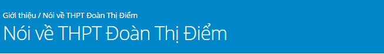

Bà Đặng Cẩm Thúy - PHHS Trần Ngọc Mai 12A1
"Tôi đã lựa chọn cho con học trường THCS Đoàn Thị Điểm sau khi học hết lớp 9 tôi lại quyết định cho con vào THPT Đoàn Thị Điểm. Bản thân tôi thấy Đoàn Thị Điểm là một môi trường thân thiện giúp học sinh phát triển toàn diện, nhà trường tôn trọng học sinh. Tổ chức các kỳ thi thử chu đáo cho học sinh khối 12 giúp các con có kỹ năng làm bài tốt. Khi học hết lớp 9 con đã thi đỗ vào trường THPT Kim Liên, nhưng vì yêu trường nên gia đình tiếp tục cho con học cấp 3 Đoàn Thị Điểm."
Bà Nguyễn Thúy Hạnh - PHHS Lã Vĩnh Hưng 10A2
"Ở trường Đoàn Thị Điểm tôi thấy đội ngũ giáo viên nhà trường được chọn lọc kỹ, luôn gần gũi, lắng nghe tìm hiểu tâm tư, nguyện vọng của học sinh, không có khoảng cách xa giữa giáo viên và học sinh như trường công lập. Nhà trường có bán trú, quản lý chặt chẽ học sinh trong các giờ học cũng như giờ ăn, ngủ trưa và các hoạt động ngoại khóa. Thông tin kịp thời về tình hình của con cho PHHS nắm được. Điều kiện cơ sở vật chất rất tốt. Các hoạt động ngoại khóa phong phú theo chủ đề hàng tuần, hàng tháng. Đặc biệt những môn con học yếu nhà trường đã tổ chức phụ đạo miễn phí cho các con để giúp các con tiến bộ trong học tập."
Hầu Hạnh Nguyên 12D2
"Nếu thầy cô là người chăm lo cho khoảng thời gian học tập thì mỗi bữa ăn giấc ngủ của chúng tôi lại có biết bao bàn tay của các cô chú cán bộ công nhân viên trong nhà trường quan tâm săn sóc. Sự chu đáo được thể hiện trong từng khay cơm, từng chiếc vỏ gối hay vỏ chăn đã được giặt sạch sẽ. Những tiếng “con ơi” cũng vang khắp phòng ăn tựa như một buổi quây quần đầm ấm của gia đình lớn."
Thái Anh Phương - 12D2
"Số điểm thi lên cấp 3 của mình có thể giúp mình học tập ở một trường công lập khác nhưng mình vẫn chọn về với Đoàn Thị Điểm. Bởi mình tin kiến thức thì ở đâu cũng có thể được học còn tình cảm yêu thương gắn bó và một môi trường học tập thân thiện chỉ có Đoàn Thị Điểm mới có được thôi."
Bà Nguyễn Thị Lan Anh - PHHS Nguyễn Đức Thành 10A2
"Là PHHS có con học từ lớp 4 trường Tiểu học Đoàn Thị Điểm tôi tiếp tục cho con vào THCS Đoàn Thị Điểm và THPT Đoàn Thị Điểm. Tôi rất tin tưởng nhà trường về phương pháp giáo dục, giảng dạy, quản lý con. Trường Đoàn Thị Điểm không gây áp lực cho các con về học hành. Điều kiện học tập, sinh hoạt tốt. Nhà trường luôn nắm bắt kịp thời thông tin và phản ánh với phụ huynh về tình hình học tập của con. Tôi rất tin tưởng và yên tâm khi cho con học tập tại trường. Tôi còn có 2 cháu nhỏ nữa, gia đình tôi quyết định sẽ tiếp tục lựa chọn hệ thống Đoàn Thị Điểm là môi trường học tập cho các con."